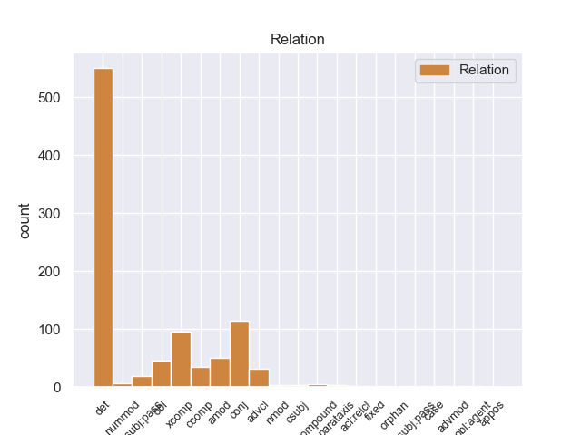
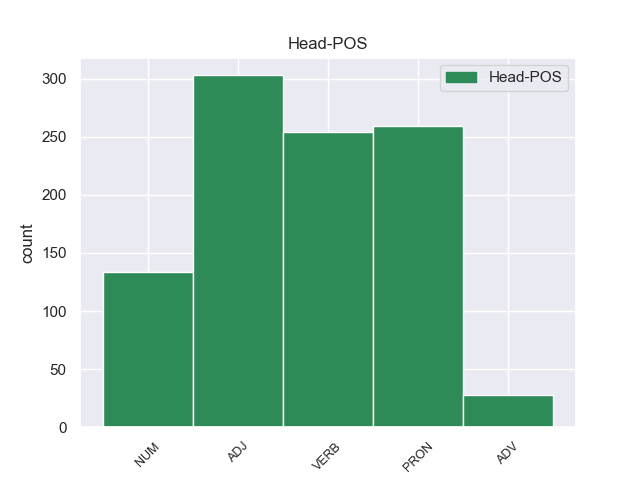
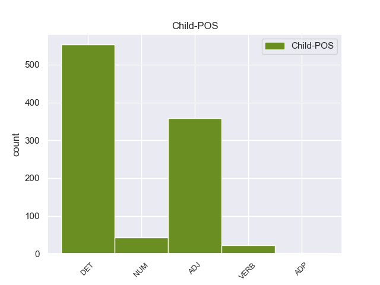

Distribution of features within this leaf



Morphosyntax Rules sorted by frequency.
- When the dependent token is the determiner(det) of the head token, and the head token is PRON and the dependent token is DET, the Gender needs to be Fem.
1 Αυτό _ _ _ _ 0 _ _ _
2 μπορεί _ _ _ _ 0 _ _ _
3 να _ _ _ _ 0 _ _ _
4 μην _ _ _ _ 0 _ _ _
5 οδηγήσει _ _ _ _ 0 _ _ _
6 σ _ _ _ _ 0 _ _ _
7 τη _ _ _ _ 0 _ _ _
8 λήξη _ _ _ _ 0 _ _ _
9 του _ _ _ _ 0 _ _ _
10 εν _ _ _ _ 0 _ _ _
11 λόγω _ _ _ _ 0 _ _ _
12 ζητήματος _ _ _ _ 0 _ _ _
13 αλλά _ _ _ _ 0 _ _ _
14 , _ _ _ _ 0 _ _ _
15 σ _ _ _ _ 0 _ _ _
16 τη _ _ _ _ 0 _ _ _
17 μορφή _ _ _ _ 0 _ _ _
18 υπό _ _ _ _ 0 _ _ _
19 την _ _ _ _ 0 _ _ _
20 οποία _ _ _ _ 0 _ _ _
21 την _ _ _ _ 0 _ _ _
22 λάβαμε _ _ _ _ 0 _ _ _
23 , _ _ _ _ 0 _ _ _
24 αυτή _ _ _ _ 0 _ _ _
25 η _ _ _ _ 0 _ _ _
26 αίτηση _ _ _ _ 0 _ _ _
27 άρσης _ _ _ _ 0 _ _ _
28 της _ _ _ _ 0 _ _ _
29 ασυλίας _ _ _ _ 0 _ _ _
30 ήταν _ _ _ _ 0 _ _ _
31 , _ _ _ _ 0 _ _ _
32 κατά _ _ _ _ 0 _ _ _
33 την _ _ _ _ 0 _ _ _
34 άποψη _ _ _ _ 0 _ _ _
35 της _ _ _ _ 0 _ _ _
36 Επιτροπής _ _ _ _ 0 _ _ _
37 Νομικών _ _ _ _ 0 _ _ _
38 Θεμάτων _ _ _ _ 0 _ _ _
39 , _ _ _ _ 0 _ _ _
40 απαράδεκτη _ _ _ _ 0 _ _ _
41 , _ _ _ _ 0 _ _ _
42 άποψη _ _ _ _ 0 _ _ _
43 την ο DET DET Case=Acc|Definite=Def|Gender=Fem|Number=Sing|PronType=Art 44 det _ _
44 οποία οποίος PRON PRON Case=Acc|Gender=Fem|Number=Sing|Person=3|PronType=Rel 0 _ _ _
45 συνιστώ _ _ _ _ 0 _ _ _
46 σ _ _ _ _ 0 _ _ _
47 το _ _ _ _ 0 _ _ _
48 Σώμα _ _ _ _ 0 _ _ _
49 να _ _ _ _ 0 _ _ _
50 υιοθετήσει _ _ _ _ 0 _ _ _
51 . _ _ _ _ 0 _ _ _
1 Τα _ _ _ _ 0 _ _ _
2 εγκλήματα _ _ _ _ 0 _ _ _
3 είναι _ _ _ _ 0 _ _ _
4 σοβαρά _ _ _ _ 0 _ _ _
5 και _ _ _ _ 0 _ _ _
6 ανήκουν _ _ _ _ 0 _ _ _
7 σε _ _ _ _ 0 _ _ _
8 μια _ _ _ _ 0 _ _ _
9 κατηγορία _ _ _ _ 0 _ _ _
10 για _ _ _ _ 0 _ _ _
11 την _ _ _ _ 0 _ _ _
12 οποία _ _ _ _ 0 _ _ _
13 κανονικά _ _ _ _ 0 _ _ _
14 δεν _ _ _ _ 0 _ _ _
15 προσφέρεται _ _ _ _ 0 _ _ _
16 βουλευτική _ _ _ _ 0 _ _ _
17 ασυλία _ _ _ _ 0 _ _ _
18 , _ _ _ _ 0 _ _ _
19 επειδή _ _ _ _ 0 _ _ _
20 δεν _ _ _ _ 0 _ _ _
21 αφορούν _ _ _ _ 0 _ _ _
22 τις _ _ _ _ 0 _ _ _
23 συνήθεις συνήθης ADJ ADJ Case=Acc|Gender=Fem|Number=Plur 0 _ _ _
24 και _ _ _ _ 0 _ _ _
25 προσήκουσες προσήκων ADJ ADJ Case=Acc|Gender=Fem|Number=Plur 23 conj _ _
26 δραστηριότητες _ _ _ _ 0 _ _ _
27 βουλευτή _ _ _ _ 0 _ _ _
28 του _ _ _ _ 0 _ _ _
29 Σώματος _ _ _ _ 0 _ _ _
30 , _ _ _ _ 0 _ _ _
31 ή _ _ _ _ 0 _ _ _
32 πολιτικού _ _ _ _ 0 _ _ _
33 που _ _ _ _ 0 _ _ _
34 δραστηριοποιείται _ _ _ _ 0 _ _ _
35 σε _ _ _ _ 0 _ _ _
36 μια _ _ _ _ 0 _ _ _
37 δημοκρατική _ _ _ _ 0 _ _ _
38 κοινωνία _ _ _ _ 0 _ _ _
39 . _ _ _ _ 0 _ _ _
1 πρόκειται _ _ _ _ 0 _ _ _
2 για _ _ _ _ 0 _ _ _
3 αυτό _ _ _ _ 0 _ _ _
4 το _ _ _ _ 0 _ _ _
5 οποίο _ _ _ _ 0 _ _ _
6 αποκαλύφθηκε _ _ _ _ 0 _ _ _
7 κατά _ _ _ _ 0 _ _ _
8 τη _ _ _ _ 0 _ _ _
9 διάρκεια _ _ _ _ 0 _ _ _
10 αυτής _ _ _ _ 0 _ _ _
11 της _ _ _ _ 0 _ _ _
12 διαδικασίας _ _ _ _ 0 _ _ _
13 , _ _ _ _ 0 _ _ _
14 ότι _ _ _ _ 0 _ _ _
15 ο _ _ _ _ 0 _ _ _
16 Εισαγγελέας _ _ _ _ 0 _ _ _
17 κάποια _ _ _ _ 0 _ _ _
18 στιγμή _ _ _ _ 0 _ _ _
19 ζήτησε _ _ _ _ 0 _ _ _
20 από _ _ _ _ 0 _ _ _
21 την _ _ _ _ 0 _ _ _
22 Πρόεδρο _ _ _ _ 0 _ _ _
23 του _ _ _ _ 0 _ _ _
24 Σώματος _ _ _ _ 0 _ _ _
25 , _ _ _ _ 0 _ _ _
26 την ο DET DET Case=Acc|Definite=Def|Gender=Fem|Number=Sing|PronType=Art 27 det _ _
27 προκάτοχό προκάτοχος ADJ ADJ Case=Acc|Gender=Fem|Number=Sing 0 _ _ _
28 σας _ _ _ _ 0 _ _ _
29 , _ _ _ _ 0 _ _ _
30 λεπτομέρειες _ _ _ _ 0 _ _ _
31 για _ _ _ _ 0 _ _ _
32 την _ _ _ _ 0 _ _ _
33 ψήφο _ _ _ _ 0 _ _ _
34 που _ _ _ _ 0 _ _ _
35 έχουν _ _ _ _ 0 _ _ _
36 δώσει _ _ _ _ 0 _ _ _
37 οι _ _ _ _ 0 _ _ _
38 δύο _ _ _ _ 0 _ _ _
39 συγκεκριμένοι _ _ _ _ 0 _ _ _
40 βουλευτές _ _ _ _ 0 _ _ _
41 προκειμένου _ _ _ _ 0 _ _ _
42 να _ _ _ _ 0 _ _ _
43 διευκρινιστεί _ _ _ _ 0 _ _ _
44 περαιτέρω _ _ _ _ 0 _ _ _
45 η _ _ _ _ 0 _ _ _
46 πιθανότητα _ _ _ _ 0 _ _ _
47 να _ _ _ _ 0 _ _ _
48 είχαν _ _ _ _ 0 _ _ _
49 ασκήσει _ _ _ _ 0 _ _ _
50 αθέμιτη _ _ _ _ 0 _ _ _
51 επιρροή _ _ _ _ 0 _ _ _
52 . _ _ _ _ 0 _ _ _
1 Πρέπει _ _ _ _ 0 _ _ _
2 να _ _ _ _ 0 _ _ _
3 επισημανθεί _ _ _ _ 0 _ _ _
4 ότι _ _ _ _ 0 _ _ _
5 ο _ _ _ _ 0 _ _ _
6 Εισαγγελέας _ _ _ _ 0 _ _ _
7 Πλημμελειοδικών _ _ _ _ 0 _ _ _
8 υποστήριξε _ _ _ _ 0 _ _ _
9 σθεναρά _ _ _ _ 0 _ _ _
10 την _ _ _ _ 0 _ _ _
11 αίτηση _ _ _ _ 0 _ _ _
12 επιβολής _ _ _ _ 0 _ _ _
13 μέτρων _ _ _ _ 0 _ _ _
14 δικαστικής _ _ _ _ 0 _ _ _
15 επιτήρησης _ _ _ _ 0 _ _ _
16 που _ _ _ _ 0 _ _ _
17 υπέβαλαν _ _ _ _ 0 _ _ _
18 οι _ _ _ _ 0 _ _ _
19 ανακριτές _ _ _ _ 0 _ _ _
20 , _ _ _ _ 0 _ _ _
21 υπογραμμίζοντας _ _ _ _ 0 _ _ _
22 τη _ _ _ _ 0 _ _ _
23 σοβαρότητα _ _ _ _ 0 _ _ _
24 και _ _ _ _ 0 _ _ _
25 τη _ _ _ _ 0 _ _ _
26 φύση _ _ _ _ 0 _ _ _
27 της _ _ _ _ 0 _ _ _
28 υπόθεσης _ _ _ _ 0 _ _ _
29 και _ _ _ _ 0 _ _ _
30 χαρακτηρίζοντας χαρακτηρίζω VERB VERB Aspect=Imp|VerbForm=Conv|Voice=Act 0 _ _ _
31 μάλιστα _ _ _ _ 0 _ _ _
32 την _ _ _ _ 0 _ _ _
33 αίτηση _ _ _ _ 0 _ _ _
34 αυτή _ _ _ _ 0 _ _ _
35 ως _ _ _ _ 0 _ _ _
36 απαραίτητη απαραίτητος ADJ ADJ Case=Acc|Gender=Fem|Number=Sing 30 xcomp _ _
37 επί _ _ _ _ 0 _ _ _
38 της _ _ _ _ 0 _ _ _
39 αρχής _ _ _ _ 0 _ _ _
40 . _ _ _ _ 0 _ _ _
1 Με _ _ _ _ 0 _ _ _
2 αυτές _ _ _ _ 0 _ _ _
3 τις _ _ _ _ 0 _ _ _
4 κατηγορίες _ _ _ _ 0 _ _ _
5 , _ _ _ _ 0 _ _ _
6 από _ _ _ _ 0 _ _ _
7 τις _ _ _ _ 0 _ _ _
8 οποίες _ _ _ _ 0 _ _ _
9 η _ _ _ _ 0 _ _ _
10 πρώτη _ _ _ _ 0 _ _ _
11 αφορά _ _ _ _ 0 _ _ _
12 λαθρεμπόριο _ _ _ _ 0 _ _ _
13 όπλων _ _ _ _ 0 _ _ _
14 κλπ. _ _ _ _ 0 _ _ _
15 , _ _ _ _ 0 _ _ _
16 και _ _ _ _ 0 _ _ _
17 βαρύνει _ _ _ _ 0 _ _ _
18 τόσο _ _ _ _ 0 _ _ _
19 τον _ _ _ _ 0 _ _ _
20 κ. _ _ _ _ 0 _ _ _
21 Pasqua _ _ _ _ 0 _ _ _
22 όσο _ _ _ _ 0 _ _ _
23 και _ _ _ _ 0 _ _ _
24 τον _ _ _ _ 0 _ _ _
25 κ. _ _ _ _ 0 _ _ _
26 Marchiani _ _ _ _ 0 _ _ _
27 , _ _ _ _ 0 _ _ _
28 ενώ _ _ _ _ 0 _ _ _
29 η ο DET DET Case=Nom|Definite=Def|Gender=Fem|Number=Sing|PronType=Art 30 det _ _
30 δεύτερη δεύτερος NUM NUM Case=Nom|Gender=Fem|Number=Sing|NumType=Ord 0 _ _ _
31 στρέφεται _ _ _ _ 0 _ _ _
32 μόνον _ _ _ _ 0 _ _ _
33 εναντίον _ _ _ _ 0 _ _ _
34 του _ _ _ _ 0 _ _ _
35 κ. _ _ _ _ 0 _ _ _
36 Pasqua _ _ _ _ 0 _ _ _
37 , _ _ _ _ 0 _ _ _
38 οι _ _ _ _ 0 _ _ _
39 ανακριτές _ _ _ _ 0 _ _ _
40 δικαστές _ _ _ _ 0 _ _ _
41 ζητούν _ _ _ _ 0 _ _ _
42 την _ _ _ _ 0 _ _ _
43 άρση _ _ _ _ 0 _ _ _
44 της _ _ _ _ 0 _ _ _
45 βουλευτικής _ _ _ _ 0 _ _ _
46 ασυλίας _ _ _ _ 0 _ _ _
47 των _ _ _ _ 0 _ _ _
48 εν _ _ _ _ 0 _ _ _
49 λόγω _ _ _ _ 0 _ _ _
50 δύο _ _ _ _ 0 _ _ _
51 κυρίων _ _ _ _ 0 _ _ _
52 , _ _ _ _ 0 _ _ _
53 προκειμένου _ _ _ _ 0 _ _ _
54 να _ _ _ _ 0 _ _ _
55 τους _ _ _ _ 0 _ _ _
56 επιβληθούν _ _ _ _ 0 _ _ _
57 ορισμένα _ _ _ _ 0 _ _ _
58 μέτρα _ _ _ _ 0 _ _ _
59 δικαστικής _ _ _ _ 0 _ _ _
60 επιτήρησης _ _ _ _ 0 _ _ _
61 : _ _ _ _ 0 _ _ _
62 να _ _ _ _ 0 _ _ _
63 τους _ _ _ _ 0 _ _ _
64 απαγορευθεί _ _ _ _ 0 _ _ _
65 η _ _ _ _ 0 _ _ _
66 επαφή _ _ _ _ 0 _ _ _
67 με _ _ _ _ 0 _ _ _
68 διάφορους _ _ _ _ 0 _ _ _
69 μάρτυρες _ _ _ _ 0 _ _ _
70 ή _ _ _ _ 0 _ _ _
71 συγκατηγορουμένους _ _ _ _ 0 _ _ _
72 σ _ _ _ _ 0 _ _ _
73 τις _ _ _ _ 0 _ _ _
74 υποθέσεις _ _ _ _ 0 _ _ _
75 αυτές _ _ _ _ 0 _ _ _
76 και _ _ _ _ 0 _ _ _
77 η _ _ _ _ 0 _ _ _
78 μετάβαση _ _ _ _ 0 _ _ _
79 σε _ _ _ _ 0 _ _ _
80 διάφορες _ _ _ _ 0 _ _ _
81 χώρες _ _ _ _ 0 _ _ _
82 , _ _ _ _ 0 _ _ _
83 καθώς _ _ _ _ 0 _ _ _
84 και _ _ _ _ 0 _ _ _
85 να _ _ _ _ 0 _ _ _
86 τους _ _ _ _ 0 _ _ _
87 επιβληθεί _ _ _ _ 0 _ _ _
88 ενδεχομένως _ _ _ _ 0 _ _ _
89 η _ _ _ _ 0 _ _ _
90 καταβολή _ _ _ _ 0 _ _ _
91 εγγύησης _ _ _ _ 0 _ _ _
92 . _ _ _ _ 0 _ _ _
1 Επιθυμώ _ _ _ _ 0 _ _ _
2 , _ _ _ _ 0 _ _ _
3 καταρχάς _ _ _ _ 0 _ _ _
4 , _ _ _ _ 0 _ _ _
5 να _ _ _ _ 0 _ _ _
6 δηλώσω δηλώνω VERB VERB Aspect=Perf|Mood=Ind|Number=Sing|Person=1|VerbForm=Fin|Voice=Act 0 _ _ _
7 ότι _ _ _ _ 0 _ _ _
8 οι _ _ _ _ 0 _ _ _
9 κατηγορίες _ _ _ _ 0 _ _ _
10 οι _ _ _ _ 0 _ _ _
11 οποίες _ _ _ _ 0 _ _ _
12 βαρύνουν _ _ _ _ 0 _ _ _
13 τους _ _ _ _ 0 _ _ _
14 εν _ _ _ _ 0 _ _ _
15 λόγω _ _ _ _ 0 _ _ _
16 βουλευτές _ _ _ _ 0 _ _ _
17 είναι _ _ _ _ 0 _ _ _
18 σοβαρές σοβαρός ADJ ADJ Case=Nom|Gender=Fem|Number=Plur 6 ccomp _ SpaceAfter=No
19 . _ _ _ _ 0 _ _ _
1 Δυστυχώς _ _ _ _ 0 _ _ _
2 τα _ _ _ _ 0 _ _ _
3 φύλλα _ _ _ _ 0 _ _ _
4 του _ _ _ _ 0 _ _ _
5 Τύπου _ _ _ _ 0 _ _ _
6 γεμίζουν _ _ _ _ 0 _ _ _
7 πάντα _ _ _ _ 0 _ _ _
8 με _ _ _ _ 0 _ _ _
9 οτιδήποτε _ _ _ _ 0 _ _ _
10 δεν _ _ _ _ 0 _ _ _
11 πάει _ _ _ _ 0 _ _ _
12 καλά _ _ _ _ 0 _ _ _
13 σ _ _ _ _ 0 _ _ _
14 την _ _ _ _ 0 _ _ _
15 Ευρώπη _ _ _ _ 0 _ _ _
16 και _ _ _ _ 0 _ _ _
17 όταν _ _ _ _ 0 _ _ _
18 η _ _ _ _ 0 _ _ _
19 πολιτική _ _ _ _ 0 _ _ _
20 μας _ _ _ _ 0 _ _ _
21 είναι _ _ _ _ 0 _ _ _
22 επιτυχής επιτυχής ADJ ADJ Case=Nom|Gender=Fem|Number=Sing 24 advcl _ _
23 δεν _ _ _ _ 0 _ _ _
24 αναφέρεται αναφέρω VERB VERB Aspect=Imp|Mood=Ind|Number=Sing|Person=3|Tense=Pres|VerbForm=Fin|Voice=Pass 0 _ _ _
25 σχεδόν _ _ _ _ 0 _ _ _
26 καθόλου _ _ _ _ 0 _ _ _
27 . _ _ _ _ 0 _ _ _
1 Ο _ _ _ _ 0 _ _ _
2 Πρόεδρος _ _ _ _ 0 _ _ _
3 της _ _ _ _ 0 _ _ _
4 Ευρωπαϊκής _ _ _ _ 0 _ _ _
5 Επιτροπής _ _ _ _ 0 _ _ _
6 , _ _ _ _ 0 _ _ _
7 Μανουέλ _ _ _ _ 0 _ _ _
8 Μπαρόζο _ _ _ _ 0 _ _ _
9 , _ _ _ _ 0 _ _ _
10 και _ _ _ _ 0 _ _ _
11 ο _ _ _ _ 0 _ _ _
12 Επικεφαλής επικεφαλής ADJ ADJ Case=Nom|Gender=Masc|Number=Sing 0 _ _ _
13 των _ _ _ _ 0 _ _ _
14 Φιλελεύθερων φιλελεύθερος ADJ ADJ Case=Gen|Gender=Fem|Number=Plur 12 amod _ _
15 του _ _ _ _ 0 _ _ _
16 Ευρωκοινοβουλίου _ _ _ _ 0 _ _ _
17 και _ _ _ _ 0 _ _ _
18 πρώην _ _ _ _ 0 _ _ _
19 Πρωθυπουργός _ _ _ _ 0 _ _ _
20 του _ _ _ _ 0 _ _ _
21 Βελγίου _ _ _ _ 0 _ _ _
22 , _ _ _ _ 0 _ _ _
23 Γκι _ _ _ _ 0 _ _ _
24 Φέρχοφστατ _ _ _ _ 0 _ _ _
25 , _ _ _ _ 0 _ _ _
26 εξέφρασαν _ _ _ _ 0 _ _ _
27 τα _ _ _ _ 0 _ _ _
28 συλληπήτηρια _ _ _ _ 0 _ _ _
29 τους _ _ _ _ 0 _ _ _
30 σ _ _ _ _ 0 _ _ _
31 τις _ _ _ _ 0 _ _ _
32 οικογένειες _ _ _ _ 0 _ _ _
33 των _ _ _ _ 0 _ _ _
34 θυμάτων _ _ _ _ 0 _ _ _
35 . _ _ _ _ 0 _ _ _
1 Ο _ _ _ _ 0 _ _ _
2 διάλογος _ _ _ _ 0 _ _ _
3 αυτός _ _ _ _ 0 _ _ _
4 συνεχίστηκε συνεχίζω VERB VERB Aspect=Perf|Mood=Ind|Number=Sing|Person=3|Tense=Past|VerbForm=Fin|Voice=Pass 0 _ _ _
5 την _ _ _ _ 0 _ _ _
6 1η 1ος NUM NUM Case=Acc|Gender=Fem|Number=Sing|NumType=Ord 4 obl _ _
7 και _ _ _ _ 0 _ _ _
8 2α_Δεκεμβρίου_2001 _ _ _ _ 0 _ _ _
9 με _ _ _ _ 0 _ _ _
10 την _ _ _ _ 0 _ _ _
11 επίσκεψη _ _ _ _ 0 _ _ _
12 της _ _ _ _ 0 _ _ _
13 τρόικας _ _ _ _ 0 _ _ _
14 σ _ _ _ _ 0 _ _ _
15 την _ _ _ _ 0 _ _ _
16 Αβάνα _ _ _ _ 0 _ _ _
17 . _ _ _ _ 0 _ _ _
1 Την _ _ _ _ 0 _ _ _
2 μεθεπομένη μεθεπόμενος ADJ ADJ Case=Acc|Gender=Fem|Number=Sing 3 obl _ _
3 σχημάτισε σχηματίζω VERB VERB Aspect=Perf|Mood=Ind|Number=Sing|Person=3|Tense=Past|VerbForm=Fin|Voice=Act 0 _ _ _
4 κυβέρνηση _ _ _ _ 0 _ _ _
5 ο _ _ _ _ 0 _ _ _
6 Δημήτριος _ _ _ _ 0 _ _ _
7 Ράλλης _ _ _ _ 0 _ _ _
8 , _ _ _ _ 0 _ _ _
9 παραιτήθηκε _ _ _ _ 0 _ _ _
10 ο _ _ _ _ 0 _ _ _
11 Κουντουριώτης _ _ _ _ 0 _ _ _
12 κι _ _ _ _ 0 _ _ _
13 έγινε _ _ _ _ 0 _ _ _
14 αντιβασίλισσα _ _ _ _ 0 _ _ _
15 η _ _ _ _ 0 _ _ _
16 βασιλομήτωρ _ _ _ _ 0 _ _ _
17 Όλγα _ _ _ _ 0 _ _ _
18 μέχρι _ _ _ _ 0 _ _ _
19 να _ _ _ _ 0 _ _ _
20 γίνει _ _ _ _ 0 _ _ _
21 δημοψήφισμα _ _ _ _ 0 _ _ _
22 , _ _ _ _ 0 _ _ _
23 το _ _ _ _ 0 _ _ _
24 οποίο _ _ _ _ 0 _ _ _
25 θα _ _ _ _ 0 _ _ _
26 επανέφερε _ _ _ _ 0 _ _ _
27 τον _ _ _ _ 0 _ _ _
28 εξόριστο _ _ _ _ 0 _ _ _
29 Κωνσταντίνο _ _ _ _ 0 _ _ _
30 . _ _ _ _ 0 _ _ _
1 Πρόσθεσε _ _ _ _ 0 _ _ _
2 ότι _ _ _ _ 0 _ _ _
3 οι _ _ _ _ 0 _ _ _
4 Ηνωμένες _ _ _ _ 0 _ _ _
5 Πολιτείες _ _ _ _ 0 _ _ _
6 δεν _ _ _ _ 0 _ _ _
7 έχουν _ _ _ _ 0 _ _ _
8 τη _ _ _ _ 0 _ _ _
9 δυνατότητα _ _ _ _ 0 _ _ _
10 να _ _ _ _ 0 _ _ _
11 αφήσουν _ _ _ _ 0 _ _ _
12 μία _ _ _ _ 0 _ _ _
13 τέτοια _ _ _ _ 0 _ _ _
14 ερευνητική _ _ _ _ 0 _ _ _
15 ευκαιρία _ _ _ _ 0 _ _ _
16 να _ _ _ _ 0 _ _ _
17 πάει πηγαίνω VERB VERB Aspect=Perf|Mood=Ind|Number=Sing|Person=3|VerbForm=Fin|Voice=Act 0 _ _ _
18 χαμένη χαμένος VERB VERB Aspect=Perf|Case=Acc|Gender=Fem|Number=Sing|VerbForm=Part|Voice=Pass 17 xcomp _ _
19 την _ _ _ _ 0 _ _ _
20 ώρα _ _ _ _ 0 _ _ _
21 που _ _ _ _ 0 _ _ _
22 ο _ _ _ _ 0 _ _ _
23 υπόλοιπος _ _ _ _ 0 _ _ _
24 κόσμος _ _ _ _ 0 _ _ _
25 προχωρά _ _ _ _ 0 _ _ _
26 σ _ _ _ _ 0 _ _ _
27 τον _ _ _ _ 0 _ _ _
28 τομέα _ _ _ _ 0 _ _ _
29 αυτό _ _ _ _ 0 _ _ _
30 . _ _ _ _ 0 _ _ _
1 Αυτό _ _ _ _ 0 _ _ _
2 μπορεί μπορώ VERB VERB Aspect=Imp|Mood=Ind|Number=Sing|Person=3|Tense=Pres|VerbForm=Fin|Voice=Act 0 _ _ _
3 να _ _ _ _ 0 _ _ _
4 μην _ _ _ _ 0 _ _ _
5 οδηγήσει _ _ _ _ 0 _ _ _
6 σ _ _ _ _ 0 _ _ _
7 τη _ _ _ _ 0 _ _ _
8 λήξη _ _ _ _ 0 _ _ _
9 του _ _ _ _ 0 _ _ _
10 εν _ _ _ _ 0 _ _ _
11 λόγω _ _ _ _ 0 _ _ _
12 ζητήματος _ _ _ _ 0 _ _ _
13 αλλά _ _ _ _ 0 _ _ _
14 , _ _ _ _ 0 _ _ _
15 σ _ _ _ _ 0 _ _ _
16 τη _ _ _ _ 0 _ _ _
17 μορφή _ _ _ _ 0 _ _ _
18 υπό _ _ _ _ 0 _ _ _
19 την _ _ _ _ 0 _ _ _
20 οποία _ _ _ _ 0 _ _ _
21 την _ _ _ _ 0 _ _ _
22 λάβαμε _ _ _ _ 0 _ _ _
23 , _ _ _ _ 0 _ _ _
24 αυτή _ _ _ _ 0 _ _ _
25 η _ _ _ _ 0 _ _ _
26 αίτηση _ _ _ _ 0 _ _ _
27 άρσης _ _ _ _ 0 _ _ _
28 της _ _ _ _ 0 _ _ _
29 ασυλίας _ _ _ _ 0 _ _ _
30 ήταν _ _ _ _ 0 _ _ _
31 , _ _ _ _ 0 _ _ _
32 κατά _ _ _ _ 0 _ _ _
33 την _ _ _ _ 0 _ _ _
34 άποψη _ _ _ _ 0 _ _ _
35 της _ _ _ _ 0 _ _ _
36 Επιτροπής _ _ _ _ 0 _ _ _
37 Νομικών _ _ _ _ 0 _ _ _
38 Θεμάτων _ _ _ _ 0 _ _ _
39 , _ _ _ _ 0 _ _ _
40 απαράδεκτη απαράδεκτος ADJ ADJ Case=Nom|Gender=Fem|Number=Sing 2 conj _ SpaceAfter=No
41 , _ _ _ _ 0 _ _ _
42 άποψη _ _ _ _ 0 _ _ _
43 την _ _ _ _ 0 _ _ _
44 οποία _ _ _ _ 0 _ _ _
45 συνιστώ _ _ _ _ 0 _ _ _
46 σ _ _ _ _ 0 _ _ _
47 το _ _ _ _ 0 _ _ _
48 Σώμα _ _ _ _ 0 _ _ _
49 να _ _ _ _ 0 _ _ _
50 υιοθετήσει _ _ _ _ 0 _ _ _
51 . _ _ _ _ 0 _ _ _
1 Για _ _ _ _ 0 _ _ _
2 τον _ _ _ _ 0 _ _ _
3 λόγο _ _ _ _ 0 _ _ _
4 αυτόν _ _ _ _ 0 _ _ _
5 θεωρούμε _ _ _ _ 0 _ _ _
6 σημαντικό _ _ _ _ 0 _ _ _
7 να _ _ _ _ 0 _ _ _
8 γίνεται _ _ _ _ 0 _ _ _
9 μεν _ _ _ _ 0 _ _ _
10 η _ _ _ _ 0 _ _ _
11 σχετική _ _ _ _ 0 _ _ _
12 εκπαίδευση _ _ _ _ 0 _ _ _
13 , _ _ _ _ 0 _ _ _
14 όχι _ _ _ _ 0 _ _ _
15 όμως _ _ _ _ 0 _ _ _
16 δύο _ _ _ _ 0 _ _ _
17 φορές _ _ _ _ 0 _ _ _
18 , _ _ _ _ 0 _ _ _
19 μία ένας NUM NUM Case=Nom|Gender=Fem|Number=Sing|NumType=Card 0 _ _ _
20 για _ _ _ _ 0 _ _ _
21 την _ _ _ _ 0 _ _ _
22 απόκτηση _ _ _ _ 0 _ _ _
23 της _ _ _ _ 0 _ _ _
24 άδειας _ _ _ _ 0 _ _ _
25 οδήγησης _ _ _ _ 0 _ _ _
26 και _ _ _ _ 0 _ _ _
27 μία ένας NUM NUM Case=Nom|Gender=Fem|Number=Sing|NumType=Card 19 conj _ _
28 σ _ _ _ _ 0 _ _ _
29 το _ _ _ _ 0 _ _ _
30 πλαίσιο _ _ _ _ 0 _ _ _
31 της _ _ _ _ 0 _ _ _
32 κατάρτισης _ _ _ _ 0 _ _ _
33 . _ _ _ _ 0 _ _ _
1 Παρόλα _ _ _ _ 0 _ _ _
2 αυτά _ _ _ _ 0 _ _ _
3 το _ _ _ _ 0 _ _ _
4 πρόβλημα _ _ _ _ 0 _ _ _
5 συνέχισε _ _ _ _ 0 _ _ _
6 να _ _ _ _ 0 _ _ _
7 απασχολεί _ _ _ _ 0 _ _ _
8 τη _ _ _ _ 0 _ _ _
9 Β' _ _ _ _ 0 _ _ _
10 Διεθνή _ _ _ _ 0 _ _ _
11 και _ _ _ _ 0 _ _ _
12 αργότερα _ _ _ _ 0 _ _ _
13 και _ _ _ _ 0 _ _ _
14 την _ _ _ _ 0 _ _ _
15 Γ' Γ' NUM NUM Case=Acc|Gender=Fem|Number=Sing|NumType=Ord 16 amod _ _
16 Διεθνή διεθνής ADJ ADJ Case=Acc|Gender=Fem|Number=Sing 0 _ _ _
17 , _ _ _ _ 0 _ _ _
18 με _ _ _ _ 0 _ _ _
19 σκοπό _ _ _ _ 0 _ _ _
20 την _ _ _ _ 0 _ _ _
21 δημιουργία _ _ _ _ 0 _ _ _
22 ανεξάρτητου _ _ _ _ 0 _ _ _
23 κράτους _ _ _ _ 0 _ _ _
24 , _ _ _ _ 0 _ _ _
25 θέση _ _ _ _ 0 _ _ _
26 η _ _ _ _ 0 _ _ _
27 οποία _ _ _ _ 0 _ _ _
28 το _ _ _ _ 0 _ _ _
29 1924 _ _ _ _ 0 _ _ _
30 υιοθετήθηκε _ _ _ _ 0 _ _ _
31 επίσημα _ _ _ _ 0 _ _ _
32 και _ _ _ _ 0 _ _ _
33 από _ _ _ _ 0 _ _ _
34 το _ _ _ _ 0 _ _ _
35 ΚΚΕ. _ _ _ _ 0 _ _ _
1 Με _ _ _ _ 0 _ _ _
2 χαρά _ _ _ _ 0 _ _ _
3 επίσης _ _ _ _ 0 _ _ _
4 σημείωσα _ _ _ _ 0 _ _ _
5 το _ _ _ _ 0 _ _ _
6 γεγονός _ _ _ _ 0 _ _ _
7 ότι _ _ _ _ 0 _ _ _
8 οι _ _ _ _ 0 _ _ _
9 περισσότερες πολύς ADJ ADJ Case=Nom|Degree=Cmp|Gender=Fem|Number=Plur 16 nsubj:pass _ _
10 από _ _ _ _ 0 _ _ _
11 τις _ _ _ _ 0 _ _ _
12 τροπολογίες _ _ _ _ 0 _ _ _
13 της _ _ _ _ 0 _ _ _
14 Επιτροπής _ _ _ _ 0 _ _ _
15 Περιβάλλοντος _ _ _ _ 0 _ _ _
16 υιοθετήθηκαν υιοθετώ VERB VERB Aspect=Perf|Mood=Ind|Number=Plur|Person=3|Tense=Past|VerbForm=Fin|Voice=Pass 0 _ _ _
17 από _ _ _ _ 0 _ _ _
18 την _ _ _ _ 0 _ _ _
19 αρμόδια _ _ _ _ 0 _ _ _
20 επιτροπή _ _ _ _ 0 _ _ _
21 . _ _ _ _ 0 _ _ _
1 Οι _ _ _ _ 0 _ _ _
2 ένοπλοι _ _ _ _ 0 _ _ _
3 της _ _ _ _ 0 _ _ _
4 Αλ _ _ _ _ 0 _ _ _
5 Κάιντα _ _ _ _ 0 _ _ _
6 ανέλαβαν αναλαμβάνω VERB VERB Aspect=Perf|Mood=Ind|Number=Plur|Person=3|Tense=Past|VerbForm=Fin|Voice=Act 0 _ _ _
7 τον _ _ _ _ 0 _ _ _
8 έλεγχο _ _ _ _ 0 _ _ _
9 της _ _ _ _ 0 _ _ _
10 Ζίνζιμπαρ _ _ _ _ 0 _ _ _
11 τον _ _ _ _ 0 _ _ _
12 περασμένο _ _ _ _ 0 _ _ _
13 Μάιο _ _ _ _ 0 _ _ _
14 , _ _ _ _ 0 _ _ _
15 ενώ _ _ _ _ 0 _ _ _
16 οι _ _ _ _ 0 _ _ _
17 κυβερνητικές _ _ _ _ 0 _ _ _
18 δυνάμεις _ _ _ _ 0 _ _ _
19 ήταν _ _ _ _ 0 _ _ _
20 απασχολημένες απασχολημένος VERB VERB Aspect=Perf|Case=Acc|Gender=Fem|Number=Plur|VerbForm=Part|Voice=Pass 6 advcl _ _
21 με _ _ _ _ 0 _ _ _
22 την _ _ _ _ 0 _ _ _
23 καταστολή _ _ _ _ 0 _ _ _
24 των _ _ _ _ 0 _ _ _
25 διαδηλώσεων _ _ _ _ 0 _ _ _
26 που _ _ _ _ 0 _ _ _
27 πραγματοποιούνταν _ _ _ _ 0 _ _ _
28 κατά _ _ _ _ 0 _ _ _
29 της _ _ _ _ 0 _ _ _
30 αυταρχικής _ _ _ _ 0 _ _ _
31 ηγεσίας _ _ _ _ 0 _ _ _
32 του _ _ _ _ 0 _ _ _
33 τότε _ _ _ _ 0 _ _ _
34 Προέδρου _ _ _ _ 0 _ _ _
35 Αλί _ _ _ _ 0 _ _ _
36 Αμπντουλάχ _ _ _ _ 0 _ _ _
37 Σαλέχ _ _ _ _ 0 _ _ _
38 . _ _ _ _ 0 _ _ _
1 Τα _ _ _ _ 0 _ _ _
2 καταπράσινα _ _ _ _ 0 _ _ _
3 νησάκια _ _ _ _ 0 _ _ _
4 Άγιος _ _ _ _ 0 _ _ _
5 Νικόλαος _ _ _ _ 0 _ _ _
6 και _ _ _ _ 0 _ _ _
7 Μαύρον _ _ _ _ 0 _ _ _
8 Όρος _ _ _ _ 0 _ _ _
9 - _ _ _ _ 0 _ _ _
10 όπου _ _ _ _ 0 _ _ _
11 και _ _ _ _ 0 _ _ _
12 χτίστηκε _ _ _ _ 0 _ _ _
13 το _ _ _ _ 0 _ _ _
14 1884 _ _ _ _ 0 _ _ _
15 φάρος _ _ _ _ 0 _ _ _
16 για _ _ _ _ 0 _ _ _
17 τη _ _ _ _ 0 _ _ _
18 διευκόλυνση _ _ _ _ 0 _ _ _
19 της _ _ _ _ 0 _ _ _
20 ακτοπλοΐας _ _ _ _ 0 _ _ _
21 - _ _ _ _ 0 _ _ _
22 που _ _ _ _ 0 _ _ _
23 περιστοιχίζουν _ _ _ _ 0 _ _ _
24 το _ _ _ _ 0 _ _ _
25 χωριό _ _ _ _ 0 _ _ _
26 είναι _ _ _ _ 0 _ _ _
27 προσβάσιμα προσβάσιμος ADJ ADJ Case=Nom|Gender=Neut|Number=Plur 0 _ _ _
28 με _ _ _ _ 0 _ _ _
29 βάρκα _ _ _ _ 0 _ _ _
30 ενώ _ _ _ _ 0 _ _ _
31 οι _ _ _ _ 0 _ _ _
32 παραλίες _ _ _ _ 0 _ _ _
33 που _ _ _ _ 0 _ _ _
34 προσφέρονται _ _ _ _ 0 _ _ _
35 για _ _ _ _ 0 _ _ _
36 κολύμπι _ _ _ _ 0 _ _ _
37 είναι _ _ _ _ 0 _ _ _
38 πολλές πολύς ADJ ADJ Case=Nom|Gender=Fem|Number=Plur 27 advcl _ _
39 και _ _ _ _ 0 _ _ _
40 πεντακάθαρες _ _ _ _ 0 _ _ _
41 : _ _ _ _ 0 _ _ _
1 Η _ _ _ _ 0 _ _ _
2 πρώτη _ _ _ _ 0 _ _ _
3 ειδοποίηση _ _ _ _ 0 _ _ _
4 θα _ _ _ _ 0 _ _ _
5 γίνεται γίνομαι VERB VERB Aspect=Imp|Mood=Ind|Number=Sing|Person=3|Tense=Pres|VerbForm=Fin|Voice=Pass 0 _ _ _
6 με _ _ _ _ 0 _ _ _
7 την _ _ _ _ 0 _ _ _
8 παρέλευση _ _ _ _ 0 _ _ _
9 πέντε _ _ _ _ 0 _ _ _
10 χρόνων _ _ _ _ 0 _ _ _
11 από _ _ _ _ 0 _ _ _
12 την _ _ _ _ 0 _ _ _
13 ημερομηνία _ _ _ _ 0 _ _ _
14 που _ _ _ _ 0 _ _ _
15 ανοίχθηκε _ _ _ _ 0 _ _ _
16 ο _ _ _ _ 0 _ _ _
17 λογαριασμός _ _ _ _ 0 _ _ _
18 , _ _ _ _ 0 _ _ _
19 η _ _ _ _ 0 _ _ _
20 δεύτερη _ _ _ _ 0 _ _ _
21 σ _ _ _ _ 0 _ _ _
22 την _ _ _ _ 0 _ _ _
23 10ετία _ _ _ _ 0 _ _ _
24 και _ _ _ _ 0 _ _ _
25 η _ _ _ _ 0 _ _ _
26 τρίτη τρίτος NUM NUM Case=Nom|Gender=Fem|Number=Sing|NumType=Ord 5 conj _ _
27 σ _ _ _ _ 0 _ _ _
28 την _ _ _ _ 0 _ _ _
29 15ετία _ _ _ _ 0 _ _ _
30 . _ _ _ _ 0 _ _ _
1 Δεκάδες δεκάδα NUM NUM Case=Nom|Gender=Fem|Number=Plur|NumType=Sets 2 compound _ _
2 χιλιάδες χιλιάδα NUM NUM Case=Nom|Gender=Fem|Number=Plur|NumType=Sets 0 _ _ _
3 πολίτες _ _ _ _ 0 _ _ _
4 έμειναν _ _ _ _ 0 _ _ _
5 χωρίς _ _ _ _ 0 _ _ _
6 ηλεκτρικό _ _ _ _ 0 _ _ _
7 ρεύμα _ _ _ _ 0 _ _ _
8 την _ _ _ _ 0 _ _ _
9 Τρίτη _ _ _ _ 0 _ _ _
10 , _ _ _ _ 0 _ _ _
11 ενώ _ _ _ _ 0 _ _ _
12 τα _ _ _ _ 0 _ _ _
13 σωστικά _ _ _ _ 0 _ _ _
14 συνεργεία _ _ _ _ 0 _ _ _
15 έδιναν _ _ _ _ 0 _ _ _
16 μάχη _ _ _ _ 0 _ _ _
17 με _ _ _ _ 0 _ _ _
18 τον _ _ _ _ 0 _ _ _
19 χρόνο _ _ _ _ 0 _ _ _
20 για _ _ _ _ 0 _ _ _
21 τη _ _ _ _ 0 _ _ _
22 διάσωση _ _ _ _ 0 _ _ _
23 ανθρώπων _ _ _ _ 0 _ _ _
24 . _ _ _ _ 0 _ _ _
1 Χρειαζόμαστε _ _ _ _ 0 _ _ _
2 έξυπνες έξυπνος ADJ ADJ Case=Acc|Gender=Fem|Number=Plur 0 _ _ _
3 και _ _ _ _ 0 _ _ _
4 διαφοροποιημένες διαφοροποιώ VERB VERB Aspect=Perf|Case=Acc|Gender=Fem|Number=Plur|VerbForm=Part|Voice=Pass 2 conj _ _
5 λύσεις _ _ _ _ 0 _ _ _
6 , _ _ _ _ 0 _ _ _
7 όπως _ _ _ _ 0 _ _ _
8 π.χ. _ _ _ _ 0 _ _ _
9 την _ _ _ _ 0 _ _ _
10 ευελιξία _ _ _ _ 0 _ _ _
11 του _ _ _ _ 0 _ _ _
12 χρόνου _ _ _ _ 0 _ _ _
13 εργασίας _ _ _ _ 0 _ _ _
14 προσαρμοσμένη _ _ _ _ 0 _ _ _
15 σ _ _ _ _ 0 _ _ _
16 τις _ _ _ _ 0 _ _ _
17 ανάγκες _ _ _ _ 0 _ _ _
18 των _ _ _ _ 0 _ _ _
19 διαφόρων _ _ _ _ 0 _ _ _
20 κλάδων _ _ _ _ 0 _ _ _
21 και _ _ _ _ 0 _ _ _
22 περιοχών _ _ _ _ 0 _ _ _
23 . _ _ _ _ 0 _ _ _
1 Το _ _ _ _ 0 _ _ _
2 ευρώ _ _ _ _ 0 _ _ _
3 είναι _ _ _ _ 0 _ _ _
4 επίσης _ _ _ _ 0 _ _ _
5 επιτυχία _ _ _ _ 0 _ _ _
6 της _ _ _ _ 0 _ _ _
7 Ευρωπαϊκής _ _ _ _ 0 _ _ _
8 Κεντρικής _ _ _ _ 0 _ _ _
9 Τράπεζας _ _ _ _ 0 _ _ _
10 , _ _ _ _ 0 _ _ _
11 των _ _ _ _ 0 _ _ _
12 χρηματοπιστωτικών _ _ _ _ 0 _ _ _
13 ιδρυμάτων _ _ _ _ 0 _ _ _
14 , _ _ _ _ 0 _ _ _
15 των _ _ _ _ 0 _ _ _
16 εκατοντάδων εκατοντάδα NUM NUM Case=Gen|Gender=Fem|Number=Plur|NumType=Sets 17 nummod _ _
17 χιλιάδων χιλιάδα NUM NUM Case=Gen|Gender=Fem|Number=Plur|NumType=Sets 0 _ _ _
18 ανώνυμων _ _ _ _ 0 _ _ _
19 πολιτών _ _ _ _ 0 _ _ _
20 που _ _ _ _ 0 _ _ _
21 δούλεψαν _ _ _ _ 0 _ _ _
22 την _ _ _ _ 0 _ _ _
23 πρώτη _ _ _ _ 0 _ _ _
24 Ιανουαρίου _ _ _ _ 0 _ _ _
25 , _ _ _ _ 0 _ _ _
26 και _ _ _ _ 0 _ _ _
27 επιτυχία _ _ _ _ 0 _ _ _
28 επίσης _ _ _ _ 0 _ _ _
29 , _ _ _ _ 0 _ _ _
30 πρέπει _ _ _ _ 0 _ _ _
31 να _ _ _ _ 0 _ _ _
32 το _ _ _ _ 0 _ _ _
33 αναγνωρίσουμε _ _ _ _ 0 _ _ _
34 , _ _ _ _ 0 _ _ _
35 του _ _ _ _ 0 _ _ _
36 Pierre _ _ _ _ 0 _ _ _
37 Werner _ _ _ _ 0 _ _ _
38 , _ _ _ _ 0 _ _ _
39 του _ _ _ _ 0 _ _ _
40 Valéry _ _ _ _ 0 _ _ _
41 Giscard _ _ _ _ 0 _ _ _
42 d' _ _ _ _ 0 _ _ _
43 Estaing _ _ _ _ 0 _ _ _
44 , _ _ _ _ 0 _ _ _
45 του _ _ _ _ 0 _ _ _
46 Helmut _ _ _ _ 0 _ _ _
47 Schmidt _ _ _ _ 0 _ _ _
48 , _ _ _ _ 0 _ _ _
49 του _ _ _ _ 0 _ _ _
50 François _ _ _ _ 0 _ _ _
51 Mitterrand _ _ _ _ 0 _ _ _
52 , _ _ _ _ 0 _ _ _
53 του _ _ _ _ 0 _ _ _
54 Helmut _ _ _ _ 0 _ _ _
55 Kohl _ _ _ _ 0 _ _ _
56 , _ _ _ _ 0 _ _ _
57 του _ _ _ _ 0 _ _ _
58 Ruud _ _ _ _ 0 _ _ _
59 Lubbers _ _ _ _ 0 _ _ _
60 , _ _ _ _ 0 _ _ _
61 του _ _ _ _ 0 _ _ _
62 Giulio _ _ _ _ 0 _ _ _
63 Andreotti _ _ _ _ 0 _ _ _
64 , _ _ _ _ 0 _ _ _
65 του _ _ _ _ 0 _ _ _
66 John _ _ _ _ 0 _ _ _
67 Major _ _ _ _ 0 _ _ _
68 , _ _ _ _ 0 _ _ _
69 του _ _ _ _ 0 _ _ _
70 Felipe _ _ _ _ 0 _ _ _
71 Gonzαlez _ _ _ _ 0 _ _ _
72 και _ _ _ _ 0 _ _ _
73 επίσης _ _ _ _ 0 _ _ _
74 του _ _ _ _ 0 _ _ _
75 Jacques _ _ _ _ 0 _ _ _
76 Santer _ _ _ _ 0 _ _ _
77 , _ _ _ _ 0 _ _ _
78 ως _ _ _ _ 0 _ _ _
79 Προέδρου _ _ _ _ 0 _ _ _
80 της _ _ _ _ 0 _ _ _
81 Επιτροπής _ _ _ _ 0 _ _ _
82 . _ _ _ _ 0 _ _ _
1 Φαίνεται φαίνομαι VERB VERB Aspect=Imp|Mood=Ind|Number=Sing|Person=3|Tense=Pres|VerbForm=Fin|Voice=Pass 0 _ _ _
2 ότι _ _ _ _ 0 _ _ _
3 δεν _ _ _ _ 0 _ _ _
4 είναι _ _ _ _ 0 _ _ _
5 σαφής σαφής ADJ ADJ Case=Nom|Gender=Fem|Number=Sing 1 csubj _ _
6 η _ _ _ _ 0 _ _ _
7 διάκριση _ _ _ _ 0 _ _ _
8 για _ _ _ _ 0 _ _ _
9 διάφορες _ _ _ _ 0 _ _ _
10 επιχειρήσεις _ _ _ _ 0 _ _ _
11 μεταξύ _ _ _ _ 0 _ _ _
12 νόμιμης _ _ _ _ 0 _ _ _
13 και _ _ _ _ 0 _ _ _
14 παράνομης _ _ _ _ 0 _ _ _
15 απασχόλησης _ _ _ _ 0 _ _ _
16 τέτοιων _ _ _ _ 0 _ _ _
17 οδηγών _ _ _ _ 0 _ _ _
18 . _ _ _ _ 0 _ _ _
1 Από _ _ _ _ 0 _ _ _
2 τις _ _ _ _ 0 _ _ _
3 τροπολογίες _ _ _ _ 0 _ _ _
4 του _ _ _ _ 0 _ _ _
5 Κοινοβουλίου _ _ _ _ 0 _ _ _
6 , _ _ _ _ 0 _ _ _
7 το _ _ _ _ 0 _ _ _
8 Συμβούλιο _ _ _ _ 0 _ _ _
9 έκανε _ _ _ _ 0 _ _ _
10 άμεσα _ _ _ _ 0 _ _ _
11 δεκτή _ _ _ _ 0 _ _ _
12 μόνο _ _ _ _ 0 _ _ _
13 την _ _ _ _ 0 _ _ _
14 τροπολογία _ _ _ _ 0 _ _ _
15 η ο DET DET Case=Nom|Definite=Def|Gender=Fem|Number=Sing|PronType=Art 17 det _ _
16 οποία _ _ _ _ 0 _ _ _
17 ζητά ζητώ VERB VERB Aspect=Imp|Mood=Ind|Number=Sing|Person=3|Tense=Pres|VerbForm=Fin|Voice=Act 0 _ _ _
18 να _ _ _ _ 0 _ _ _
19 περιληφθεί _ _ _ _ 0 _ _ _
20 ο _ _ _ _ 0 _ _ _
21 αριθμός _ _ _ _ 0 _ _ _
22 της _ _ _ _ 0 _ _ _
23 άδειας _ _ _ _ 0 _ _ _
24 οδήγησης _ _ _ _ 0 _ _ _
25 και _ _ _ _ 0 _ _ _
26 της _ _ _ _ 0 _ _ _
27 κοινωνικής _ _ _ _ 0 _ _ _
28 ασφάλισης _ _ _ _ 0 _ _ _
29 . _ _ _ _ 0 _ _ _
1 Το _ _ _ _ 0 _ _ _
2 2013 _ _ _ _ 0 _ _ _
3 η _ _ _ _ 0 _ _ _
4 Ελλάδα _ _ _ _ 0 _ _ _
5 βρισκόταν _ _ _ _ 0 _ _ _
6 σ _ _ _ _ 0 _ _ _
7 την _ _ _ _ 0 _ _ _
8 85η _ _ _ _ 0 _ _ _
9 θέση _ _ _ _ 0 _ _ _
10 , _ _ _ _ 0 _ _ _
11 ενώ _ _ _ _ 0 _ _ _
12 το _ _ _ _ 0 _ _ _
13 2012 2012 NUM NUM NumType=Card 0 _ _ _
14 σ _ _ _ _ 0 _ _ _
15 την _ _ _ _ 0 _ _ _
16 71η 71ος NUM NUM Case=Nom|Gender=Fem|Number=Sing|NumType=Ord 13 orphan _ SpaceAfter=No
17 , _ _ _ _ 0 _ _ _
18 που _ _ _ _ 0 _ _ _
19 σημαίνει _ _ _ _ 0 _ _ _
20 ότι _ _ _ _ 0 _ _ _
21 τα _ _ _ _ 0 _ _ _
22 τελευταία _ _ _ _ 0 _ _ _
23 δύο _ _ _ _ 0 _ _ _
24 χρόνια _ _ _ _ 0 _ _ _
25 η _ _ _ _ 0 _ _ _
26 Ελλάδα _ _ _ _ 0 _ _ _
27 υποχώρησε _ _ _ _ 0 _ _ _
28 28 _ _ _ _ 0 _ _ _
29 θέσεις _ _ _ _ 0 _ _ _
30 σ _ _ _ _ 0 _ _ _
31 την _ _ _ _ 0 _ _ _
32 παγκόσμια _ _ _ _ 0 _ _ _
33 κατάταξη _ _ _ _ 0 _ _ _
34 αναφορικά _ _ _ _ 0 _ _ _
35 με _ _ _ _ 0 _ _ _
36 την _ _ _ _ 0 _ _ _
37 ελευθερία _ _ _ _ 0 _ _ _
38 του _ _ _ _ 0 _ _ _
39 τύπου _ _ _ _ 0 _ _ _
40 . _ _ _ _ 0 _ _ _
1 Εξίσου _ _ _ _ 0 _ _ _
2 σημαντική σημαντικός ADJ ADJ Case=Nom|Gender=Fem|Number=Sing 46 csubj:pass _ _
3 ήταν _ _ _ _ 0 _ _ _
4 η _ _ _ _ 0 _ _ _
5 πτώση _ _ _ _ 0 _ _ _
6 που _ _ _ _ 0 _ _ _
7 σημείωσαν _ _ _ _ 0 _ _ _
8 και _ _ _ _ 0 _ _ _
9 οι _ _ _ _ 0 _ _ _
10 ΗΠΑ _ _ _ _ 0 _ _ _
11 σ _ _ _ _ 0 _ _ _
12 την _ _ _ _ 0 _ _ _
13 ίδια _ _ _ _ 0 _ _ _
14 έκθεση _ _ _ _ 0 _ _ _
15 μετά _ _ _ _ 0 _ _ _
16 το _ _ _ _ 0 _ _ _
17 κυνήγι _ _ _ _ 0 _ _ _
18 σ _ _ _ _ 0 _ _ _
19 το _ _ _ _ 0 _ _ _
20 οποίο _ _ _ _ 0 _ _ _
21 έχει _ _ _ _ 0 _ _ _
22 επιδοθεί _ _ _ _ 0 _ _ _
23 η _ _ _ _ 0 _ _ _
24 αμερικανική _ _ _ _ 0 _ _ _
25 κυβέρνηση _ _ _ _ 0 _ _ _
26 προς _ _ _ _ 0 _ _ _
27 τους _ _ _ _ 0 _ _ _
28 υπεύθυνους _ _ _ _ 0 _ _ _
29 διαρροών _ _ _ _ 0 _ _ _
30 κρατικών _ _ _ _ 0 _ _ _
31 μυστικών _ _ _ _ 0 _ _ _
32 , _ _ _ _ 0 _ _ _
33 γεγονός _ _ _ _ 0 _ _ _
34 που _ _ _ _ 0 _ _ _
35 λειτουργεί _ _ _ _ 0 _ _ _
36 ως _ _ _ _ 0 _ _ _
37 " _ _ _ _ 0 _ _ _
38 προειδοποίηση _ _ _ _ 0 _ _ _
39 για _ _ _ _ 0 _ _ _
40 οποιονδήποτε _ _ _ _ 0 _ _ _
41 επιχειρήσει _ _ _ _ 0 _ _ _
42 αντίστοιχες _ _ _ _ 0 _ _ _
43 ενέργειες _ _ _ _ 0 _ _ _
44 " _ _ _ _ 0 _ _ _
45 , _ _ _ _ 0 _ _ _
46 αναφέρεται αναφέρω VERB VERB Aspect=Imp|Mood=Ind|Number=Sing|Person=3|Tense=Pres|VerbForm=Fin|Voice=Pass 0 _ _ _
47 σ _ _ _ _ 0 _ _ _
48 την _ _ _ _ 0 _ _ _
49 έκθεση _ _ _ _ 0 _ _ _
50 των _ _ _ _ 0 _ _ _
51 " _ _ _ _ 0 _ _ _
52 Δημοσιογράφων _ _ _ _ 0 _ _ _
53 Χωρίς _ _ _ _ 0 _ _ _
54 Σύνορα _ _ _ _ 0 _ _ _
55 " _ _ _ _ 0 _ _ _
56 . _ _ _ _ 0 _ _ _
1 Η _ _ _ _ 0 _ _ _
2 Επιτροπή _ _ _ _ 0 _ _ _
3 συμφωνεί συμφωνώ VERB VERB Aspect=Imp|Mood=Ind|Number=Sing|Person=3|Tense=Pres|VerbForm=Fin|Voice=Act 0 _ _ _
4 επίσης _ _ _ _ 0 _ _ _
5 ότι _ _ _ _ 0 _ _ _
6 οι _ _ _ _ 0 _ _ _
7 αναθέτουσες _ _ _ _ 0 _ _ _
8 αρχές _ _ _ _ 0 _ _ _
9 θα _ _ _ _ 0 _ _ _
10 πρέπει _ _ _ _ 0 _ _ _
11 να _ _ _ _ 0 _ _ _
12 είναι _ _ _ _ 0 _ _ _
13 υποχρεωμένες υποχρεώνω VERB VERB Aspect=Perf|Case=Nom|Gender=Fem|Number=Plur|VerbForm=Part|Voice=Pass 3 ccomp _ _
14 να _ _ _ _ 0 _ _ _
15 αναφέρουν _ _ _ _ 0 _ _ _
16 σ _ _ _ _ 0 _ _ _
17 τα _ _ _ _ 0 _ _ _
18 συμβατικά _ _ _ _ 0 _ _ _
19 τεύχη _ _ _ _ 0 _ _ _
20 τον _ _ _ _ 0 _ _ _
21 φορέα _ _ _ _ 0 _ _ _
22 από _ _ _ _ 0 _ _ _
23 τον _ _ _ _ 0 _ _ _
24 οποίο _ _ _ _ 0 _ _ _
25 μπορούν _ _ _ _ 0 _ _ _
26 να _ _ _ _ 0 _ _ _
27 λαμβάνονται _ _ _ _ 0 _ _ _
28 πληροφορίες _ _ _ _ 0 _ _ _
29 για _ _ _ _ 0 _ _ _
30 τις _ _ _ _ 0 _ _ _
31 εφαρμοστέες _ _ _ _ 0 _ _ _
32 κοινωνικές _ _ _ _ 0 _ _ _
33 υποχρεώσεις _ _ _ _ 0 _ _ _
34 . _ _ _ _ 0 _ _ _
1 Πιστεύω _ _ _ _ 0 _ _ _
2 ότι _ _ _ _ 0 _ _ _
3 αξίζει _ _ _ _ 0 _ _ _
4 στ' στου ADP ADP Case=Acc|Gender=Fem|Number=Sing 5 case _ _
5 αλήθεια αλήθεια ADV ADV _ 0 _ _ _
6 τον _ _ _ _ 0 _ _ _
7 κόπο _ _ _ _ 0 _ _ _
8 να _ _ _ _ 0 _ _ _
9 συνεχίσουμε _ _ _ _ 0 _ _ _
10 το _ _ _ _ 0 _ _ _
11 πρόγραμμα _ _ _ _ 0 _ _ _
12 αυτό _ _ _ _ 0 _ _ _
13 και _ _ _ _ 0 _ _ _
14 , _ _ _ _ 0 _ _ _
15 αν _ _ _ _ 0 _ _ _
16 είναι _ _ _ _ 0 _ _ _
17 δυνατόν _ _ _ _ 0 _ _ _
18 , _ _ _ _ 0 _ _ _
19 να _ _ _ _ 0 _ _ _
20 αυξήσουμε _ _ _ _ 0 _ _ _
21 τους _ _ _ _ 0 _ _ _
22 σχετικούς _ _ _ _ 0 _ _ _
23 πόρους _ _ _ _ 0 _ _ _
24 . _ _ _ _ 0 _ _ _
1 Ας _ _ _ _ 0 _ _ _
2 είμαστε _ _ _ _ 0 _ _ _
3 όμως _ _ _ _ 0 _ _ _
4 ειλικρινείς ειλικρινής ADJ ADJ Case=Nom|Gender=Masc|Number=Plur 0 _ _ _
5 - _ _ _ _ 0 _ _ _
6 η _ _ _ _ 0 _ _ _
7 αύξηση _ _ _ _ 0 _ _ _
8 αυτή _ _ _ _ 0 _ _ _
9 δεν _ _ _ _ 0 _ _ _
10 είναι _ _ _ _ 0 _ _ _
11 αρκετή αρκετός ADJ ADJ Case=Nom|Gender=Fem|Number=Sing 4 parataxis _ SpaceAfter=No
12 . _ _ _ _ 0 _ _ _
1 Οι _ _ _ _ 0 _ _ _
2 Κουκουναριές _ _ _ _ 0 _ _ _
3 είναι _ _ _ _ 0 _ _ _
4 ένα _ _ _ _ 0 _ _ _
5 μέρος _ _ _ _ 0 _ _ _
6 σ _ _ _ _ 0 _ _ _
7 τη _ _ _ _ 0 _ _ _
8 Σκιάθο _ _ _ _ 0 _ _ _
9 πασίγνωστο _ _ _ _ 0 _ _ _
10 για _ _ _ _ 0 _ _ _
11 την _ _ _ _ 0 _ _ _
12 παραλία _ _ _ _ 0 _ _ _
13 του _ _ _ _ 0 _ _ _
14 , _ _ _ _ 0 _ _ _
15 η _ _ _ _ 0 _ _ _
16 οποία _ _ _ _ 0 _ _ _
17 θεωρείται θεωρώ VERB VERB Aspect=Imp|Mood=Ind|Number=Sing|Person=3|Tense=Pres|VerbForm=Fin|Voice=Pass 0 _ _ _
18 μία ένας NUM NUM Case=Acc|Gender=Fem|Number=Sing|NumType=Card 17 xcomp _ _
19 από _ _ _ _ 0 _ _ _
20 τις _ _ _ _ 0 _ _ _
21 πιο _ _ _ _ 0 _ _ _
22 όμορφες _ _ _ _ 0 _ _ _
23 της _ _ _ _ 0 _ _ _
24 Ευρώπης _ _ _ _ 0 _ _ _
25 . _ _ _ _ 0 _ _ _
1 Οι _ _ _ _ 0 _ _ _
2 Κουκουναριές _ _ _ _ 0 _ _ _
3 είναι _ _ _ _ 0 _ _ _
4 ένα _ _ _ _ 0 _ _ _
5 μέρος _ _ _ _ 0 _ _ _
6 σ _ _ _ _ 0 _ _ _
7 τη _ _ _ _ 0 _ _ _
8 Σκιάθο _ _ _ _ 0 _ _ _
9 πασίγνωστο _ _ _ _ 0 _ _ _
10 για _ _ _ _ 0 _ _ _
11 την _ _ _ _ 0 _ _ _
12 παραλία _ _ _ _ 0 _ _ _
13 του _ _ _ _ 0 _ _ _
14 , _ _ _ _ 0 _ _ _
15 η _ _ _ _ 0 _ _ _
16 οποία _ _ _ _ 0 _ _ _
17 θεωρείται _ _ _ _ 0 _ _ _
18 μία ένας NUM NUM Case=Acc|Gender=Fem|Number=Sing|NumType=Card 0 _ _ _
19 από _ _ _ _ 0 _ _ _
20 τις _ _ _ _ 0 _ _ _
21 πιο _ _ _ _ 0 _ _ _
22 όμορφες όμορφος ADJ ADJ Case=Acc|Gender=Fem|Number=Plur 18 nmod _ _
23 της _ _ _ _ 0 _ _ _
24 Ευρώπης _ _ _ _ 0 _ _ _
25 . _ _ _ _ 0 _ _ _
1 Όλες _ _ _ _ 0 _ _ _
2 τους _ _ _ _ 0 _ _ _
3 έχουν έχω VERB VERB Aspect=Imp|Mood=Ind|Number=Plur|Person=3|Tense=Pres|VerbForm=Fin|Voice=Act 0 _ _ _
4 καταγάλανα _ _ _ _ 0 _ _ _
5 νερά _ _ _ _ 0 _ _ _
6 και _ _ _ _ 0 _ _ _
7 είναι _ _ _ _ 0 _ _ _
8 πνιγμένες πνίγω VERB VERB Aspect=Perf|Case=Nom|Gender=Fem|Number=Plur|VerbForm=Part|Voice=Pass 3 conj _ _
9 σ _ _ _ _ 0 _ _ _
10 το _ _ _ _ 0 _ _ _
11 πράσινο _ _ _ _ 0 _ _ _
12 . _ _ _ _ 0 _ _ _
1 Εκεί εκεί ADV ADV _ 0 _ _ _
2 όπου _ _ _ _ 0 _ _ _
3 δεν _ _ _ _ 0 _ _ _
4 είναι _ _ _ _ 0 _ _ _
5 δυνατή δυνατός ADJ ADJ Case=Nom|Gender=Fem|Number=Sing 1 acl:relcl _ _
6 η _ _ _ _ 0 _ _ _
7 κατάργηση _ _ _ _ 0 _ _ _
8 της _ _ _ _ 0 _ _ _
9 θανατικής _ _ _ _ 0 _ _ _
10 ποινής _ _ _ _ 0 _ _ _
11 , _ _ _ _ 0 _ _ _
12 είναι _ _ _ _ 0 _ _ _
13 απαραίτητο _ _ _ _ 0 _ _ _
14 να _ _ _ _ 0 _ _ _
15 επιτευχθεί _ _ _ _ 0 _ _ _
16 τουλάχιστον _ _ _ _ 0 _ _ _
17 η _ _ _ _ 0 _ _ _
18 μη _ _ _ _ 0 _ _ _
19 εφαρμογή _ _ _ _ 0 _ _ _
20 της _ _ _ _ 0 _ _ _
21 , _ _ _ _ 0 _ _ _
22 καθώς _ _ _ _ 0 _ _ _
23 και _ _ _ _ 0 _ _ _
24 σημαντική _ _ _ _ 0 _ _ _
25 μείωση _ _ _ _ 0 _ _ _
26 του _ _ _ _ 0 _ _ _
27 αριθμού _ _ _ _ 0 _ _ _
28 των _ _ _ _ 0 _ _ _
29 πολιτικών _ _ _ _ 0 _ _ _
30 κρατουμένων _ _ _ _ 0 _ _ _
31 και _ _ _ _ 0 _ _ _
32 αύξηση _ _ _ _ 0 _ _ _
33 των _ _ _ _ 0 _ _ _
34 κυρώσεων _ _ _ _ 0 _ _ _
35 των _ _ _ _ 0 _ _ _
36 μέσων _ _ _ _ 0 _ _ _
37 των _ _ _ _ 0 _ _ _
38 Ηνωμένων _ _ _ _ 0 _ _ _
39 Εθνών _ _ _ _ 0 _ _ _
40 σχετικά _ _ _ _ 0 _ _ _
41 με _ _ _ _ 0 _ _ _
42 τα _ _ _ _ 0 _ _ _
43 ανθρώπινα _ _ _ _ 0 _ _ _
44 δικαιώματα _ _ _ _ 0 _ _ _
45 . _ _ _ _ 0 _ _ _
1 Μια _ _ _ _ 0 _ _ _
2 υπεραγορά _ _ _ _ 0 _ _ _
3 θα _ _ _ _ 0 _ _ _
4 μπορούσε _ _ _ _ 0 _ _ _
5 να _ _ _ _ 0 _ _ _
6 διαθέτει _ _ _ _ 0 _ _ _
7 προς _ _ _ _ 0 _ _ _
8 πώληση _ _ _ _ 0 _ _ _
9 μία ένας PRON PRON Case=Acc|Gender=Fem|Number=Sing|Person=3|PronType=Ind 0 _ _ _
10 ή _ _ _ _ 0 _ _ _
11 πολλές πολύς ADJ ADJ Case=Acc|Gender=Fem|Number=Plur 9 conj _ _
12 μάρκες _ _ _ _ 0 _ _ _
13 αν _ _ _ _ 0 _ _ _
14 πληροί _ _ _ _ 0 _ _ _
15 τα _ _ _ _ 0 _ _ _
16 κριτήρια _ _ _ _ 0 _ _ _
17 που _ _ _ _ 0 _ _ _
18 καθορίζει _ _ _ _ 0 _ _ _
19 ο _ _ _ _ 0 _ _ _
20 κατασκευαστής _ _ _ _ 0 _ _ _
21 . _ _ _ _ 0 _ _ _
1 Με _ _ _ _ 0 _ _ _
2 αυτές _ _ _ _ 0 _ _ _
3 τις _ _ _ _ 0 _ _ _
4 κατηγορίες _ _ _ _ 0 _ _ _
5 , _ _ _ _ 0 _ _ _
6 από _ _ _ _ 0 _ _ _
7 τις _ _ _ _ 0 _ _ _
8 οποίες _ _ _ _ 0 _ _ _
9 η _ _ _ _ 0 _ _ _
10 πρώτη _ _ _ _ 0 _ _ _
11 αφορά _ _ _ _ 0 _ _ _
12 λαθρεμπόριο _ _ _ _ 0 _ _ _
13 όπλων _ _ _ _ 0 _ _ _
14 κλπ. _ _ _ _ 0 _ _ _
15 , _ _ _ _ 0 _ _ _
16 και _ _ _ _ 0 _ _ _
17 βαρύνει _ _ _ _ 0 _ _ _
18 τόσο _ _ _ _ 0 _ _ _
19 τον _ _ _ _ 0 _ _ _
20 κ. _ _ _ _ 0 _ _ _
21 Pasqua _ _ _ _ 0 _ _ _
22 όσο _ _ _ _ 0 _ _ _
23 και _ _ _ _ 0 _ _ _
24 τον _ _ _ _ 0 _ _ _
25 κ. _ _ _ _ 0 _ _ _
26 Marchiani _ _ _ _ 0 _ _ _
27 , _ _ _ _ 0 _ _ _
28 ενώ _ _ _ _ 0 _ _ _
29 η _ _ _ _ 0 _ _ _
30 δεύτερη δεύτερος NUM NUM Case=Nom|Gender=Fem|Number=Sing|NumType=Ord 31 nsubj:pass _ _
31 στρέφεται στρέφω VERB VERB Aspect=Imp|Mood=Ind|Number=Sing|Person=3|Tense=Pres|VerbForm=Fin|Voice=Pass 0 _ _ _
32 μόνον _ _ _ _ 0 _ _ _
33 εναντίον _ _ _ _ 0 _ _ _
34 του _ _ _ _ 0 _ _ _
35 κ. _ _ _ _ 0 _ _ _
36 Pasqua _ _ _ _ 0 _ _ _
37 , _ _ _ _ 0 _ _ _
38 οι _ _ _ _ 0 _ _ _
39 ανακριτές _ _ _ _ 0 _ _ _
40 δικαστές _ _ _ _ 0 _ _ _
41 ζητούν _ _ _ _ 0 _ _ _
42 την _ _ _ _ 0 _ _ _
43 άρση _ _ _ _ 0 _ _ _
44 της _ _ _ _ 0 _ _ _
45 βουλευτικής _ _ _ _ 0 _ _ _
46 ασυλίας _ _ _ _ 0 _ _ _
47 των _ _ _ _ 0 _ _ _
48 εν _ _ _ _ 0 _ _ _
49 λόγω _ _ _ _ 0 _ _ _
50 δύο _ _ _ _ 0 _ _ _
51 κυρίων _ _ _ _ 0 _ _ _
52 , _ _ _ _ 0 _ _ _
53 προκειμένου _ _ _ _ 0 _ _ _
54 να _ _ _ _ 0 _ _ _
55 τους _ _ _ _ 0 _ _ _
56 επιβληθούν _ _ _ _ 0 _ _ _
57 ορισμένα _ _ _ _ 0 _ _ _
58 μέτρα _ _ _ _ 0 _ _ _
59 δικαστικής _ _ _ _ 0 _ _ _
60 επιτήρησης _ _ _ _ 0 _ _ _
61 : _ _ _ _ 0 _ _ _
62 να _ _ _ _ 0 _ _ _
63 τους _ _ _ _ 0 _ _ _
64 απαγορευθεί _ _ _ _ 0 _ _ _
65 η _ _ _ _ 0 _ _ _
66 επαφή _ _ _ _ 0 _ _ _
67 με _ _ _ _ 0 _ _ _
68 διάφορους _ _ _ _ 0 _ _ _
69 μάρτυρες _ _ _ _ 0 _ _ _
70 ή _ _ _ _ 0 _ _ _
71 συγκατηγορουμένους _ _ _ _ 0 _ _ _
72 σ _ _ _ _ 0 _ _ _
73 τις _ _ _ _ 0 _ _ _
74 υποθέσεις _ _ _ _ 0 _ _ _
75 αυτές _ _ _ _ 0 _ _ _
76 και _ _ _ _ 0 _ _ _
77 η _ _ _ _ 0 _ _ _
78 μετάβαση _ _ _ _ 0 _ _ _
79 σε _ _ _ _ 0 _ _ _
80 διάφορες _ _ _ _ 0 _ _ _
81 χώρες _ _ _ _ 0 _ _ _
82 , _ _ _ _ 0 _ _ _
83 καθώς _ _ _ _ 0 _ _ _
84 και _ _ _ _ 0 _ _ _
85 να _ _ _ _ 0 _ _ _
86 τους _ _ _ _ 0 _ _ _
87 επιβληθεί _ _ _ _ 0 _ _ _
88 ενδεχομένως _ _ _ _ 0 _ _ _
89 η _ _ _ _ 0 _ _ _
90 καταβολή _ _ _ _ 0 _ _ _
91 εγγύησης _ _ _ _ 0 _ _ _
92 . _ _ _ _ 0 _ _ _
non-conforming Examples:
1 Το _ _ _ _ 0 _ _ _
2 σκορ _ _ _ _ 0 _ _ _
3 του _ _ _ _ 0 _ _ _
4 αγώνα _ _ _ _ 0 _ _ _
5 άνοιξε _ _ _ _ 0 _ _ _
6 ο _ _ _ _ 0 _ _ _
7 Γουέν _ _ _ _ 0 _ _ _
8 Ρούνι _ _ _ _ 0 _ _ _
9 σ _ _ _ _ 0 _ _ _
10 το _ _ _ _ 0 _ _ _
11 22ο _ _ _ _ 0 _ _ _
12 λεπτό _ _ _ _ 0 _ _ _
13 , _ _ _ _ 0 _ _ _
14 ωστόσο _ _ _ _ 0 _ _ _
15 οι ο DET DET Case=Nom|Definite=Def|Gender=Masc|Number=Plur|PronType=Art 16 det _ _
16 φιλοξενούμενοι φιλοξενούμενος ADJ ADJ Case=Nom|Gender=Masc|Number=Plur 0 _ _ _
17 ισοφάρισαν _ _ _ _ 0 _ _ _
18 με _ _ _ _ 0 _ _ _
19 τον _ _ _ _ 0 _ _ _
20 Λλορέντε _ _ _ _ 0 _ _ _
21 σ _ _ _ _ 0 _ _ _
22 το _ _ _ _ 0 _ _ _
23 44' _ _ _ _ 0 _ _ _
24 . _ _ _ _ 0 _ _ _
1 Το _ _ _ _ 0 _ _ _
2 σκορ _ _ _ _ 0 _ _ _
3 του _ _ _ _ 0 _ _ _
4 αγώνα _ _ _ _ 0 _ _ _
5 άνοιξε _ _ _ _ 0 _ _ _
6 ο _ _ _ _ 0 _ _ _
7 Γουέν _ _ _ _ 0 _ _ _
8 Ρούνι _ _ _ _ 0 _ _ _
9 σ _ _ _ _ 0 _ _ _
10 το _ _ _ _ 0 _ _ _
11 22ο _ _ _ _ 0 _ _ _
12 λεπτό _ _ _ _ 0 _ _ _
13 , _ _ _ _ 0 _ _ _
14 ωστόσο _ _ _ _ 0 _ _ _
15 οι _ _ _ _ 0 _ _ _
16 φιλοξενούμενοι _ _ _ _ 0 _ _ _
17 ισοφάρισαν _ _ _ _ 0 _ _ _
18 με _ _ _ _ 0 _ _ _
19 τον _ _ _ _ 0 _ _ _
20 Λλορέντε _ _ _ _ 0 _ _ _
21 σ _ _ _ _ 0 _ _ _
22 το ο DET AtDf Case=Acc|Gender=Neut|Number=Sing 23 det _ _
23 44' 44' NUM NUM NumType=Card 0 _ _ _
24 . _ _ _ _ 0 _ _ _
1 Οι ο DET DET Case=Nom|Definite=Def|Gender=Masc|Number=Plur|PronType=Art 3 det _ _
2 δύο _ _ _ _ 0 _ _ _
3 αντίπαλοι αντίπαλος ADJ ADJ Case=Nom|Gender=Masc|Number=Plur 0 _ _ _
4 θα _ _ _ _ 0 _ _ _
5 ξανασυναντηθούν _ _ _ _ 0 _ _ _
6 σ _ _ _ _ 0 _ _ _
7 τις _ _ _ _ 0 _ _ _
8 15 _ _ _ _ 0 _ _ _
9 Μαρτίου _ _ _ _ 0 _ _ _
10 σ _ _ _ _ 0 _ _ _
11 το _ _ _ _ 0 _ _ _
12 Στάδιο _ _ _ _ 0 _ _ _
13 « _ _ _ _ 0 _ _ _
14 Σαν _ _ _ _ 0 _ _ _
15 Μαμές _ _ _ _ 0 _ _ _
16 » _ _ _ _ 0 _ _ _
17 , _ _ _ _ 0 _ _ _
18 με _ _ _ _ 0 _ _ _
19 τους _ _ _ _ 0 _ _ _
20 Ισπανούς _ _ _ _ 0 _ _ _
21 να _ _ _ _ 0 _ _ _
22 χρειάζονται _ _ _ _ 0 _ _ _
23 νίκη _ _ _ _ 0 _ _ _
24 και _ _ _ _ 0 _ _ _
25 ισοπαλία _ _ _ _ 0 _ _ _
26 και _ _ _ _ 0 _ _ _
27 με _ _ _ _ 0 _ _ _
28 τους _ _ _ _ 0 _ _ _
29 κόκκινους _ _ _ _ 0 _ _ _
30 διαβόλους _ _ _ _ 0 _ _ _
31 να _ _ _ _ 0 _ _ _
32 χρειάζονται _ _ _ _ 0 _ _ _
33 νίκη _ _ _ _ 0 _ _ _
34 με _ _ _ _ 0 _ _ _
35 διαφορά _ _ _ _ 0 _ _ _
36 δύο _ _ _ _ 0 _ _ _
37 τερμάτων _ _ _ _ 0 _ _ _
38 . _ _ _ _ 0 _ _ _
1 Οι _ _ _ _ 0 _ _ _
2 δύο δύο NUM NUM Case=Nom|Gender=Masc|Number=Plur|NumType=Card 3 nummod _ _
3 αντίπαλοι αντίπαλος ADJ ADJ Case=Nom|Gender=Masc|Number=Plur 0 _ _ _
4 θα _ _ _ _ 0 _ _ _
5 ξανασυναντηθούν _ _ _ _ 0 _ _ _
6 σ _ _ _ _ 0 _ _ _
7 τις _ _ _ _ 0 _ _ _
8 15 _ _ _ _ 0 _ _ _
9 Μαρτίου _ _ _ _ 0 _ _ _
10 σ _ _ _ _ 0 _ _ _
11 το _ _ _ _ 0 _ _ _
12 Στάδιο _ _ _ _ 0 _ _ _
13 « _ _ _ _ 0 _ _ _
14 Σαν _ _ _ _ 0 _ _ _
15 Μαμές _ _ _ _ 0 _ _ _
16 » _ _ _ _ 0 _ _ _
17 , _ _ _ _ 0 _ _ _
18 με _ _ _ _ 0 _ _ _
19 τους _ _ _ _ 0 _ _ _
20 Ισπανούς _ _ _ _ 0 _ _ _
21 να _ _ _ _ 0 _ _ _
22 χρειάζονται _ _ _ _ 0 _ _ _
23 νίκη _ _ _ _ 0 _ _ _
24 και _ _ _ _ 0 _ _ _
25 ισοπαλία _ _ _ _ 0 _ _ _
26 και _ _ _ _ 0 _ _ _
27 με _ _ _ _ 0 _ _ _
28 τους _ _ _ _ 0 _ _ _
29 κόκκινους _ _ _ _ 0 _ _ _
30 διαβόλους _ _ _ _ 0 _ _ _
31 να _ _ _ _ 0 _ _ _
32 χρειάζονται _ _ _ _ 0 _ _ _
33 νίκη _ _ _ _ 0 _ _ _
34 με _ _ _ _ 0 _ _ _
35 διαφορά _ _ _ _ 0 _ _ _
36 δύο _ _ _ _ 0 _ _ _
37 τερμάτων _ _ _ _ 0 _ _ _
38 . _ _ _ _ 0 _ _ _
1 Οι _ _ _ _ 0 _ _ _
2 δύο _ _ _ _ 0 _ _ _
3 αντίπαλοι αντίπαλος ADJ ADJ Case=Nom|Gender=Masc|Number=Plur 5 nsubj:pass _ _
4 θα _ _ _ _ 0 _ _ _
5 ξανασυναντηθούν ξανασυναντώ VERB VERB Aspect=Perf|Mood=Ind|Number=Plur|Person=3|VerbForm=Fin|Voice=Pass 0 _ _ _
6 σ _ _ _ _ 0 _ _ _
7 τις _ _ _ _ 0 _ _ _
8 15 _ _ _ _ 0 _ _ _
9 Μαρτίου _ _ _ _ 0 _ _ _
10 σ _ _ _ _ 0 _ _ _
11 το _ _ _ _ 0 _ _ _
12 Στάδιο _ _ _ _ 0 _ _ _
13 « _ _ _ _ 0 _ _ _
14 Σαν _ _ _ _ 0 _ _ _
15 Μαμές _ _ _ _ 0 _ _ _
16 » _ _ _ _ 0 _ _ _
17 , _ _ _ _ 0 _ _ _
18 με _ _ _ _ 0 _ _ _
19 τους _ _ _ _ 0 _ _ _
20 Ισπανούς _ _ _ _ 0 _ _ _
21 να _ _ _ _ 0 _ _ _
22 χρειάζονται _ _ _ _ 0 _ _ _
23 νίκη _ _ _ _ 0 _ _ _
24 και _ _ _ _ 0 _ _ _
25 ισοπαλία _ _ _ _ 0 _ _ _
26 και _ _ _ _ 0 _ _ _
27 με _ _ _ _ 0 _ _ _
28 τους _ _ _ _ 0 _ _ _
29 κόκκινους _ _ _ _ 0 _ _ _
30 διαβόλους _ _ _ _ 0 _ _ _
31 να _ _ _ _ 0 _ _ _
32 χρειάζονται _ _ _ _ 0 _ _ _
33 νίκη _ _ _ _ 0 _ _ _
34 με _ _ _ _ 0 _ _ _
35 διαφορά _ _ _ _ 0 _ _ _
36 δύο _ _ _ _ 0 _ _ _
37 τερμάτων _ _ _ _ 0 _ _ _
38 . _ _ _ _ 0 _ _ _